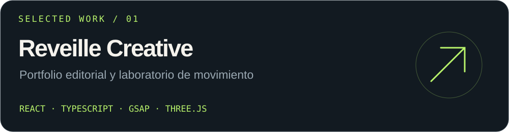
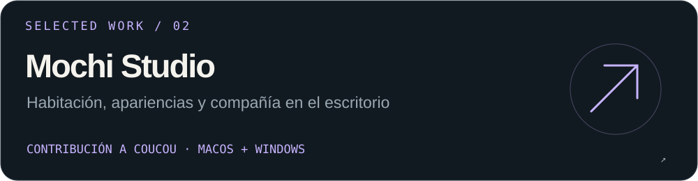

Me gusta construir interfaces visuales, cuidar el movimiento y convertir ideas en cosas que se puedan probar. Aquí reúno mis proyectos y las contribuciones que estoy preparando.
Proyectos seleccionados

Reveille Creative — Portfolio conceptual con escenas WebGL, animación y una biblioteca de interacciones. Explorar el proyecto ↗

Mochi Studio — Una contribución a Coucou, de Louis Raillé: habitación editable, apariencias y enganche automático a ventanas.
En lo que estoy trabajando
Personalización de Mochi, detalles de interacción y una presentación clara de la contribución para revisión.
Tecnologías de estos proyectos: React · TypeScript · GSAP · Three.js · Swift · Rust · Tauri.
Código, movimiento y pequeños detalles. Coucou y Mochi pertenecen a Louis Raillé.